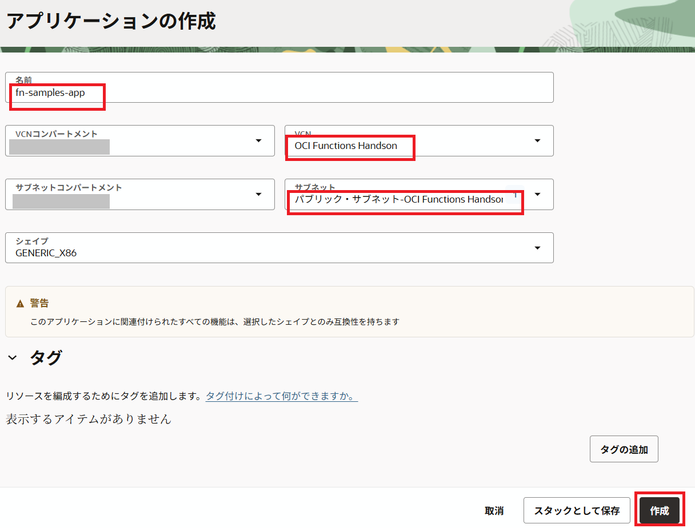
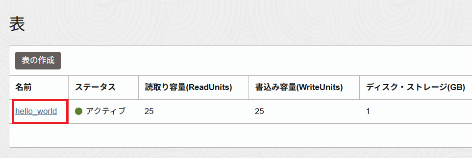
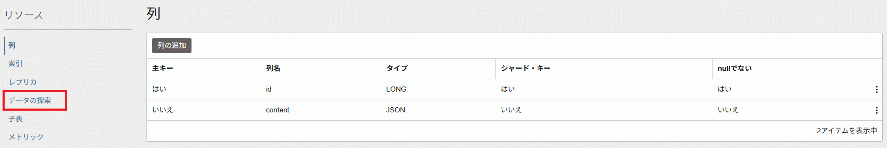
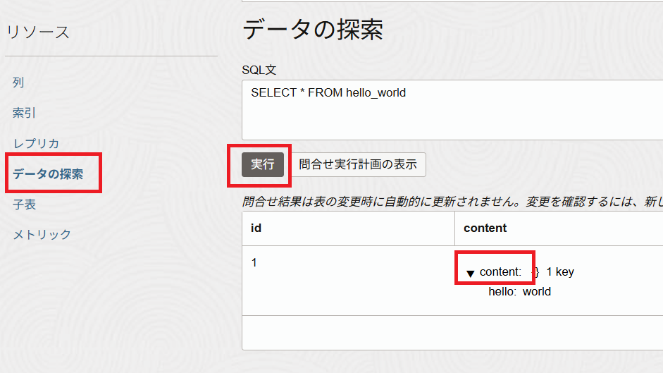
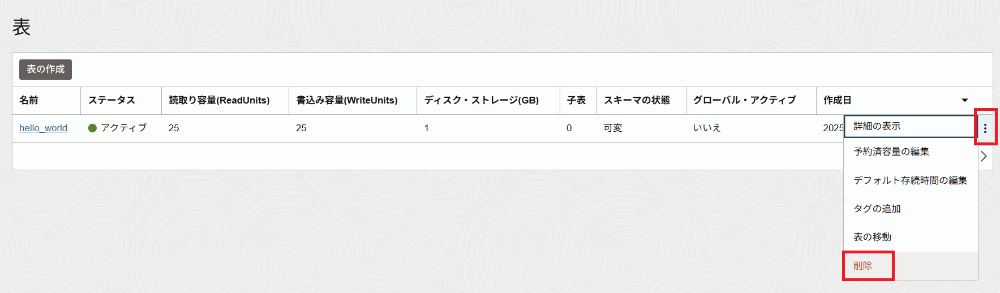

Oracle NoSQL Database Cloud Serviceは、大容量データを高速に処理するフルマネージドデータベースクラウドサービスです。ドキュメント、カラムナー、キーと値のペアなどのデータ・モデルをサポートし、すべてのトランザクションはACIDに準拠しています。
このハンズオンでは、Oracle FunctionsをOracle NoSQL Database Cloud Serviceに接続して、テーブルを作成し、データを登録する方法について説明します。
今回は、Oracle OCI SDKのリソースプリンシパルという仕組みを利用して、Oracle FunctionsからOracle NoSQL Database Cloud Serviceにアクセスしてみます。
リソースプリンシパルについて
Oracle Functionsでのリソースプリンシパルの利用についてはファンクションの実行からのその他のOracle Cloud Infrastructureリソースへのアクセスをご確認ください。
条件
- クラウド環境
- 有効なOracle Cloudアカウントがあること
- 事前環境構築
- Fn Projectハンズオンが完了していること
- Oracle Functionsハンズオンが完了していること
1.事前準備
ここでは、リソースプリンシパルを利用するための動的グループおよびポリシーの作成を行います。
1-1. 動的グループの作成
OCIコンソールのハンバーガーメニューをクリックして、[アイデンティティとセキュリティ]から[動的グループ]に移動し、「動的グループの作成」をクリックします。
以下項目を入力して、「作成」をクリックします。
- 名前：動的グループの名前。今回は、
func_dyn_grp - 説明：動的グループの説明。今回は、
Function Dynamic Group - ルール1：
ALL {resource.type = 'fnfunc', resource.compartment.id = '<compartment-ocid>'}(compartment-ocidはOracleFunctionsが利用するコンパートメントOCID。今回はルートコンパートメント。)
1-2. ポリシーの作成
Oracle OCIコンソールの左上にあるハンバーガーメニューをクリックして、[アイデンティティとセキュリティ]⇒[ポリシー]に移動します。ご利用するコンパートメントを選択して、次のポリシー文を使用して新しいポリシーを作成します。（もしくは、既存のポリシーに追加します。）
allow dynamic-group <dynamic-group-name> to manage nosql-family in compartment <compartment-name>
- dynamic-group-name：動的グループの名前。今回は、
func_dyn_grp - compartment-name：利用するコンパートメントを指定。今回は、ルートコンパートメント
以上で、事前準備は完了です。
2.Oracle Functionsの作成とデプロイ
ここでは、Oracle Functionsの作成とデプロイを行います。
2-1. Functionの作成
Oracle OCIコンソールの左上にあるハンバーガーメニューをクリックして、[開発者サービス]⇒[ファンクション]に移動します。
Oracle Functionsに使用する予定のリージョンを選択します。
Fn Project CLIコンテキストで指定されたコンパートメントを選択します。
[アプリケーションの作成]をクリックして、次を指定します。
- 名前：アプリケーションの名前。今回は、
fn-samples-app。 - VCN：Functionを実行するVCN。今回は、Oracle Functionsハンズオンで作成したVCNを指定。
- サブネット：Functionを実行するサブネット。今回は、Oracle Functionsハンズオンで作成したVCNのパブリック・サブネットを指定。

「作成」をクリックします。
2-2. Functionのデプロイ
Oracle Functionsハンズオンで利用したCloud Shellにログインします。
ソースコードをcloneし、ディレクトリに移動します。
git clone https://github.com/oracle-japan/connect-to-nosql-with-functions.git
cd connect-to-nosql-with-functions
今回のサンプルアプリケーションは、Oracle NoSQL Database Cloud Serviceに接続後、テーブル作成⇒データインサート⇒データ検索を行い、検索結果を応答として出力されます。
public String handleRequest(String input) throws Exception {
System.out.println("Inside Java HelloNosqlFunction.handleRequest()");
try {
NosqlClient nosqlClient = getNosqlClient();
createHelloWorldTable(nosqlClient);
writeOneRecord(nosqlClient, 1, "{\"hello\":\"world\"}");
String readResult = readOneRecord(nosqlClient, 1);
System.out.println(readResult);
return readResult;
} catch (Exception e) {
e.printStackTrace();
return null;
}
}
以下のコマンドを実行し、fn-connect-to-nosqlというJava言語のFunctionをデプロイします。
fn -v deploy --app fn-samples-app
Functionsを実行するために環境変数を設定します。
fn config app fn-samples-app COMPARTMENT_ID [your_compartment_ocid]
- your_compartment_ocid：利用するコンパートメントのOCID。今回はルートコンパートメントのOCID。
fn config app fn-samples-app REGION_ID [region_id]
- region_id：Functionsをデプロイしたリージョンを指定。今回は、
us-ashburn-1
以上ででOracle Functionsの作成とデプロイは完了です。
3.動作確認
ここでは、実際にデプロイしたFunctionsを動作させて、動作確認を行います。
3-1. Functionの呼び出す
以下のコマンドを実行し、デプロイしたFunctionsを実行します。
fn invoke fn-samples-app fn-connect-to-nosql
以下の出力が表示されます。
{id=1, content={"hello":"world"}}
3-2. Oracle NoSQL Database Cloud Serviceでの確認
Oracle OCIコンソールの左上にあるハンバーガーメニューをクリックして、[NoSQLデータベース]に移動します。
“hello_world”というテーブルが作成され、表示されます。
“hello_world”のリンクをクリックします。

[リソース]⇒[表]の情報が表示されます。
[表の行]をクリックします。

[表の行]の情報が表示され、[問合せの実行]をクリックして、検索が実行されます。

[NoSQLデータベース]の画面で、右側の[削除]をクリックして、Oracle Functionsにより作成されたテーブルが削除されます。

これで、Oracle Functionsを使用してOracle NoSQL Database Cloud Serviceにテーブルの作成およびデータのインサートができました。
お疲れ様でした！